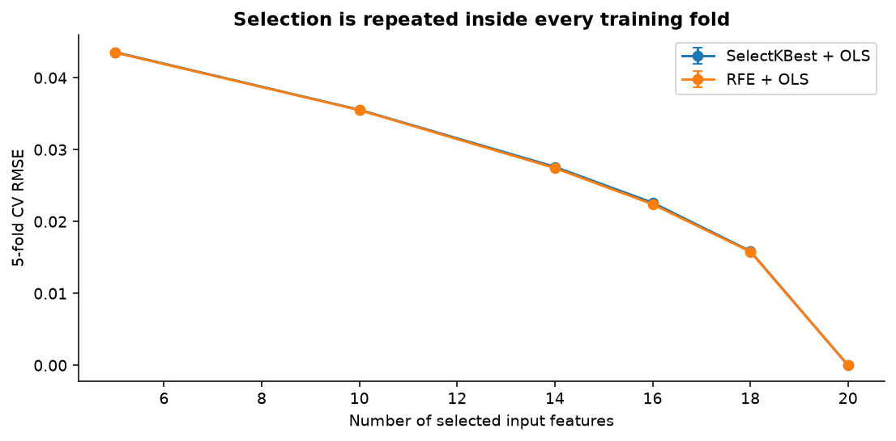
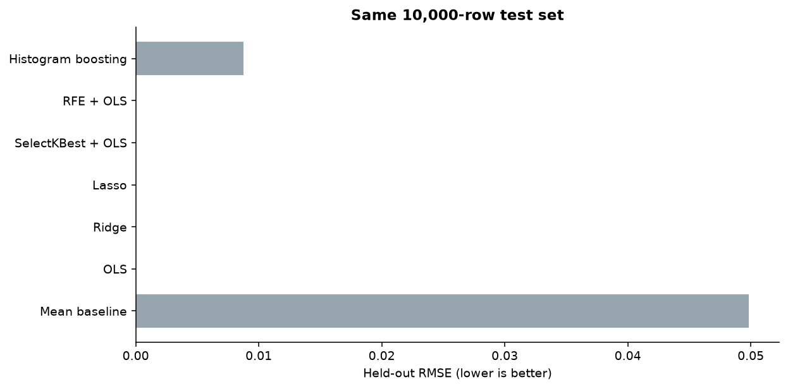
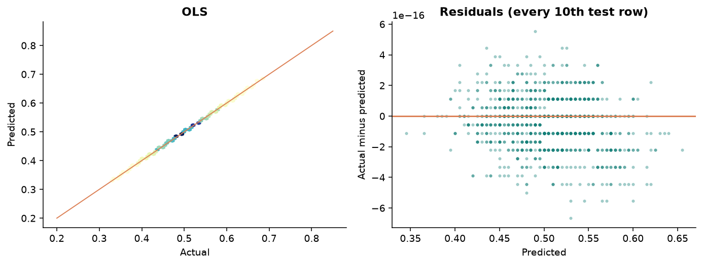
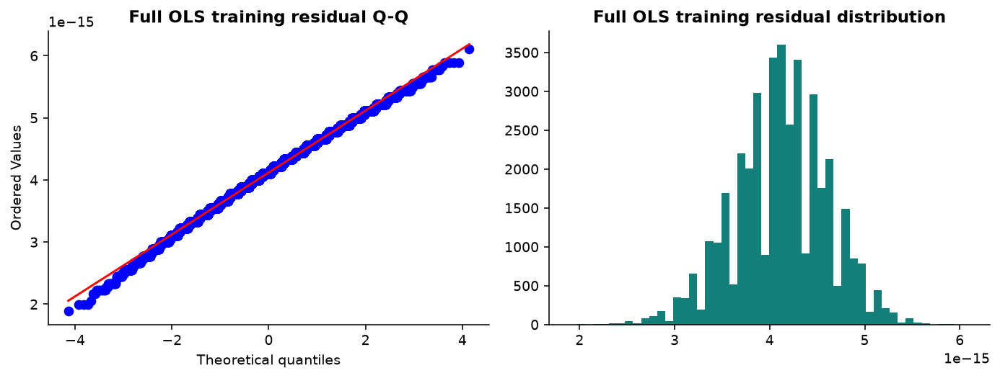
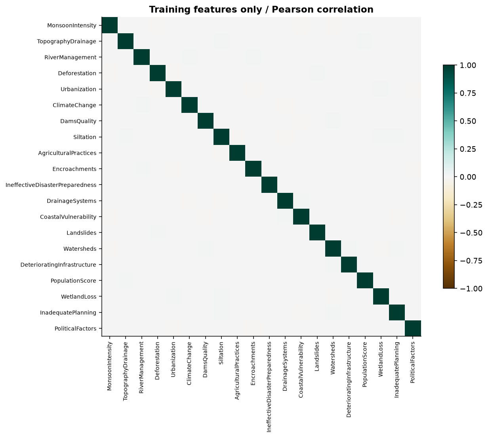
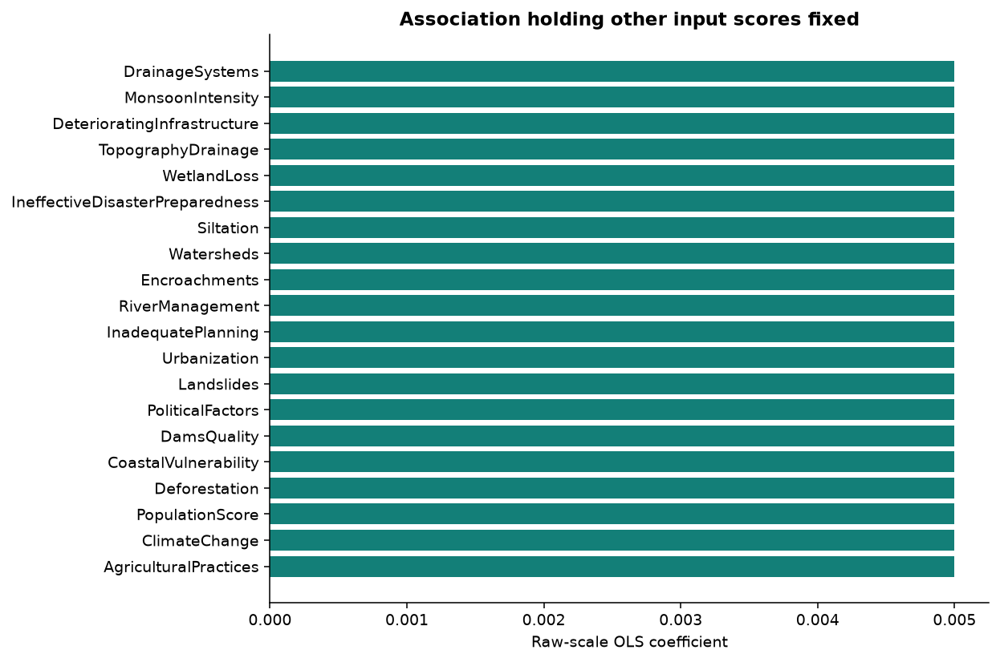

商業理解
研究 20 個因素是否能預測 FloodProbability，及精簡欄位會付出多少誤差。以訓練平均值作基準，不做因果或災害決策推論。
01 / EVIDENCE
40,000 筆訓練資料做 5 折交叉驗證；
10,000 筆測試資料只用於最後評估。
| 方法 | CV RMSE ± SD | 測試 RMSE | 測試 MAE | 測試 R² | 非零係數 |
|---|
SD 為五折分數的描述性標準差，不是信賴區間。推薦由 CV 鎖定，沒有用測試分數回頭選模。


02 / INTERACTIVE EXPERIMENT
輸入訓練範圍內的因素分數，
查看原始尺度方程式的計算結果。
情境為各欄中位數 ± 1 個訓練標準差的合成組合，不代表實際地區。
03 / MODEL DIAGNOSTICS


本資料殘差退化，故不解讀 RESET、常態與等變異檢定 p 值。沒有時空或群組欄位，因此無法確認觀測獨立性。


04 / CRISP-DM
學號 7114056126
物聯網數據分析與應用
研究 20 個因素是否能預測 FloodProbability，及精簡欄位會付出多少誤差。以訓練平均值作基準，不做因果或災害決策推論。
Kaggle Flood Prediction Dataset，固定版本 1。檢查型態、缺值、重複值、分布與訓練相關性；保留下載來源及 SHA-256。
移除完全重複列及缺少目標列，再做 80/20 切分。補值、標準化、特徵選擇均放入 Pipeline，在每個訓練折重新擬合。
OLS、Ridge、Lasso、SelectKBest + OLS、RFE + OLS；另比較直方圖梯度提升。所有方法共用固定五折，以 CV RMSE 選參數。
報告 MAE、MSE、RMSE、R² 與 OLS 訓練 Adjusted R²。檢視殘差、Q-Q、VIF、RESET 和異質變異檢定，；殘差退化時停用推論與區間。
Python 完成訓練與結果匯出；靜態網站載入實際模型係數進行預測。提供原始碼、報告與測試預測，方便重現與檢查。
05 / OPEN & REPRODUCIBLE
報告已標示尚待補上的 NotebookLM 研究與完整 GPT 對話附件。